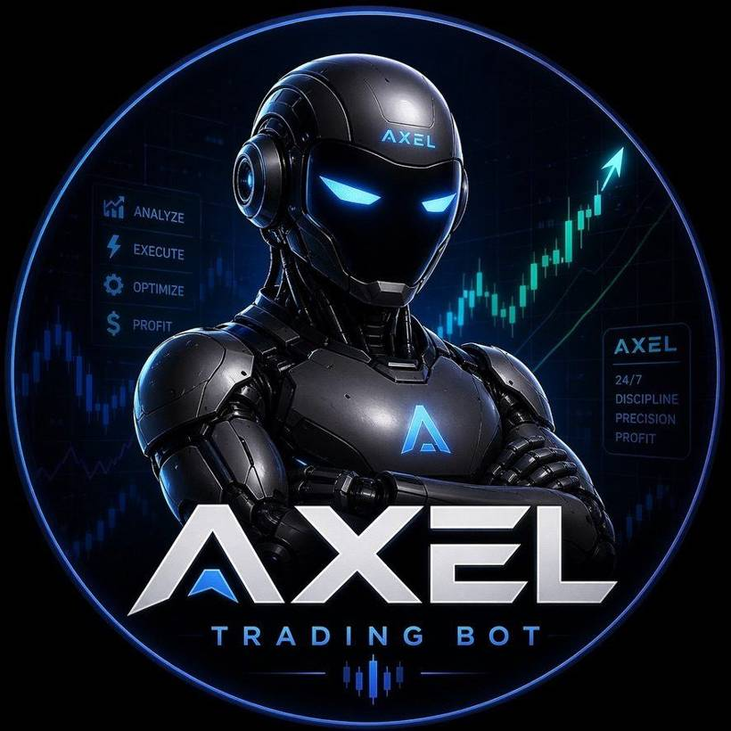
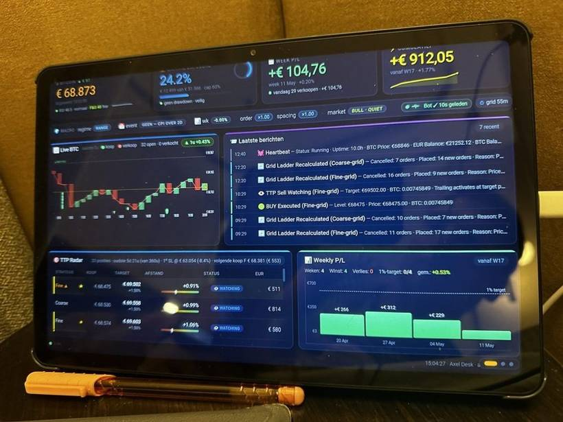

One quiet evening I was sitting out on my balcony, 35 floors up in Ho Chi Minh City. Gorgeous view, a rare moment of calm away from work, and my mind finally had a bit of room to wander. And then it just hit me: I didn't want to use AI only to ask things anymore, the way I always had. I wanted to use it to actually build something real.
And I knew exactly what, too. A trading system — with Bitcoin as the instrument for the strategies, precisely because it moves around so much. I'm an ex-banker, 23 years in the business, so markets are basically in my blood. But I'm not a developer. A few years ago this little idea would have quietly died right there on that balcony. This time it didn't — and the reason it didn't is the tool this review is all about: Replit.
What Replit actually is (in plain English)
Strip away all the jargon and Replit is really two things rolled into one. First, it's a cloud coding environment — you write and run your software right in your browser, nothing to install, and it keeps your program humming away on its servers 24/7. Second — and this is the part that completely changed things for me — it has a built-in AI Agent that writes the actual code together with you while you just describe, in plain everyday words, what you want.
So after a bit of digging that evening on the balcony, I landed on Replit and started building. And in a stunningly short space of time I had a proper, professional trading system that runs 24/7 and lives entirely on Replit. No laptop that has to stay on, no server I need to babysit. It just runs.
Building with the AI Agent: meet Axel
The Replit AI Agent isn't one of those chatbots that dumps a wall of code on you and wishes you luck. The thing I love most is that it thinks along with you, gently challenges you, and shows you clearly what it's building at every step. I even gave mine a name — Axel — because honestly, it started to feel like a real colleague.
My way of working is almost embarrassingly simple now. I open the app, say "hi Axel," and we just build on together. I'd come in with a trading strategy I'd read about in a book, talk it through with the agent, poke holes in it together, and then have it built. The bot on Replit now runs all of it around the clock, and even today I keep tinkering and adding to the system bit by bit.

For an ex-banker with no coding background at all, this is the real unlock. The hard part of building software was never the ideas — us bankers have plenty of those. It was the blank page, the syntax, the not knowing where on earth to start. The agent takes that barrier away completely, while still nudging you to think clearly about your own logic. It doesn't make you lazy; it just makes you fast.
The dashboard we built together
Axel and I also built a genuinely lovely dashboard together. At a single glance I can see how much money is in play, which kind of market we're in, the live profit and loss, when the bot is planning to buy or sell, and the thinking behind every decision it's made. Just as importantly, it gives me a nudge the moment a strategy starts misbehaving — so I can step in right away instead of finding out days later.

The bot does its trading on the exchange Bitvavo, which connects to Replit through its API. I won't go too deep on the exchange side here — I wrote a whole separate piece about that: how I run a 24/7 bot on Bitvavo. For this review, the point is simply that Replit is the brain and the home; the exchange is just the hands.
What Replit costs
You can start completely free, which is exactly what I did. Once your bot needs to run live and around the clock, you'll want a paid plan for the always-on hosting and the heavier AI Agent use. Here's the honest lay of the land:
| Plan | Price (approx.) | What you get | Best for |
|---|---|---|---|
| Starter (Free) | €0 | Build & test, limited AI Agent usage | Trying it out |
| Replit Core | ~$20/mo | Generous AI Agent credits, more compute, always-on apps | Running a live bot |
| Teams | From ~$35/user/mo | Collaboration, centralized billing, more power | Small teams |
Prices shift around as Replit updates its plans, so always check the current page — but it's the structure that matters: free to learn, then a modest monthly fee once you go live. For what it actually replaces (a developer, a server, and a whole lot of time), I honestly think it's a bargain.
The honest pros and cons
Let me be straight with you about both halves of the story — here's what I love about Replit, and where it falls a little short.
What I love
- It genuinely works for non-coders. I built a real, money-handling system without a computer-science degree.
- The AI Agent explains, it doesn't just generate. You actually learn as you build, and that adds up over time.
- 24/7 hosting comes included. No separate server, no DevOps rabbit hole to fall down.
- You can build from literally anywhere — even your phone. Half of my early work happened in a browser tab out on that balcony.
- Fast to tinker with. Idea to running tweak is minutes, not days.
Where it falls short
- AI Agent use adds up. Heavy building months will push you toward the paid tiers quicker than you'd expect.
- It gives you plenty of rope. The agent will happily build something risky if you ask for something risky — the guardrails are on you.
- It's no substitute for understanding your own logic. Especially with money on the line, you have to know what your system is actually doing.
If you can describe what you want clearly and you're willing to think, Replit will build it with you. If you're after a magic "make me money" button, this — like everything else — simply isn't that.
Who Replit is (and isn't) for
Replit is for the person I was on that balcony: someone with real-world knowledge and ideas but no traditional coding path, who's done just asking AI and wants to start building. Founders, solo operators, analysts, tinkerers. If that sounds like you, it's close to a superpower.
It's a less natural fit if you're a seasoned engineer with a toolchain you already love, or if you want a pure no-code drag-and-drop builder with zero logic involved. Replit sits in that lovely sweet spot in between: real software, minus the traditional barrier to getting started.
How It Reclaimed My Time & Peace of Mind
For years, I dreamed of building my own trading system—something so good and smart that professional investors would look at it and be genuinely impressed. But let's be honest: where do you find the time to learn how to code from scratch, build out complex strategies, and set up solid risk controls that let you sleep at night? It normally takes years of trial and error, and you usually end up with a messy system that doesn't fully work.
But we live in an amazing time right now. With Replit, I built this entire system step by step in just a couple of days. The AI agent didn't just write code; it challenged my thoughts and came up with great suggestions. It honestly felt like building a project together with a super smart business partner who knows everything. Doing something that used to take years in just a single week is something I am incredibly proud of.
Frequently asked questions
Can you really build a trading bot with Replit?
Yes. Mine runs 24/7 on Replit, built with the AI Agent and Python, connected to my exchange by API. I'm an ex-banker with no formal coding background, so if I can do it, the barrier is genuinely low.
How much does Replit cost?
Free to start. Paid plans (Replit Core) begin around $20/month and add always-on hosting and much more AI Agent usage — which is what you'll want once your bot runs live.
Do I need to know how to code?
No. The agent writes and explains the code while you describe what you want. You still need to think clearly, but it removes the blank-page barrier completely.
Is running a bot 24/7 on Replit safe?
It can be, with guardrails: API keys limited to trading only (no withdrawals), position limits, and a dashboard that flags problems. Start small before you scale.
Ready to try Replit?
Join thousands of founders already using Replit to grow their business.
Get Started with Replit →